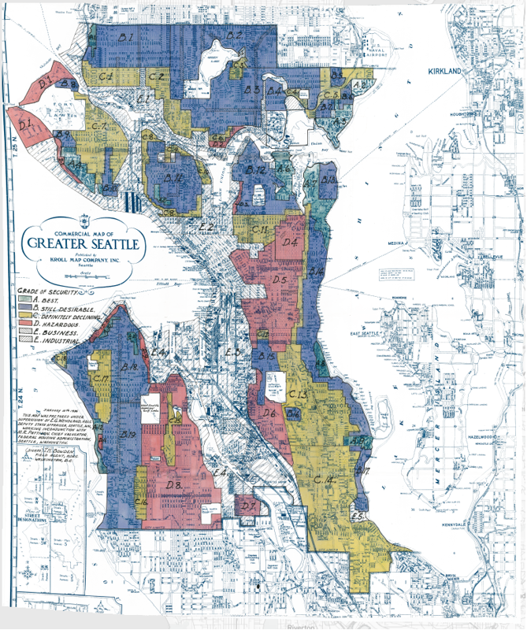
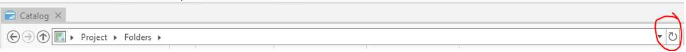
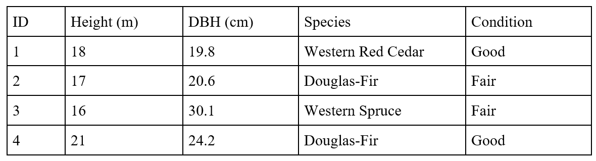
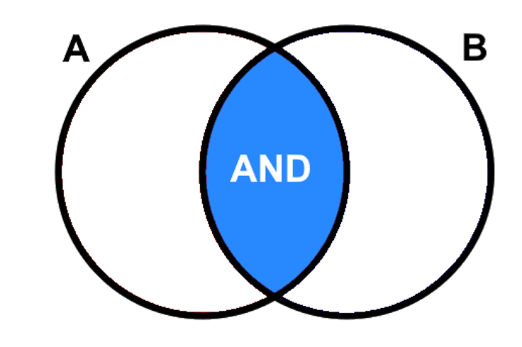
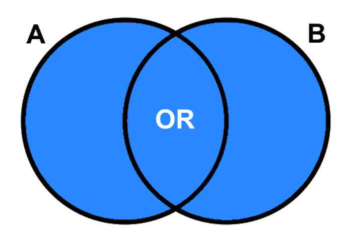
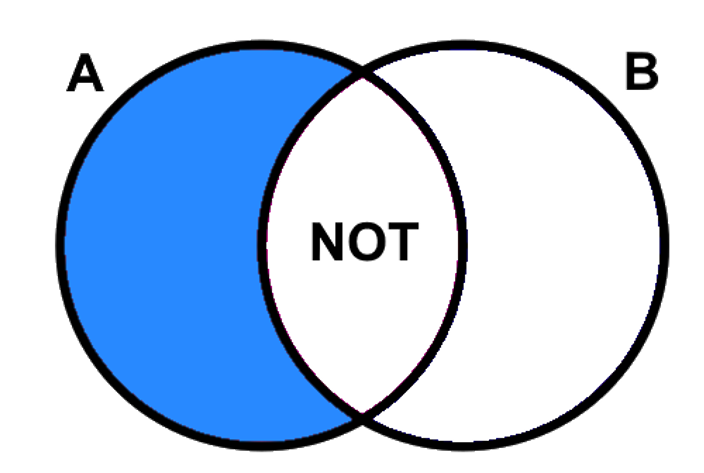
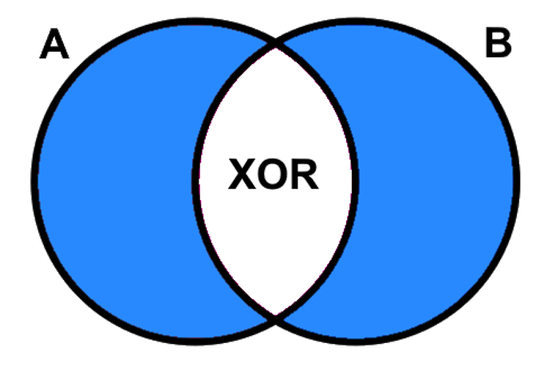
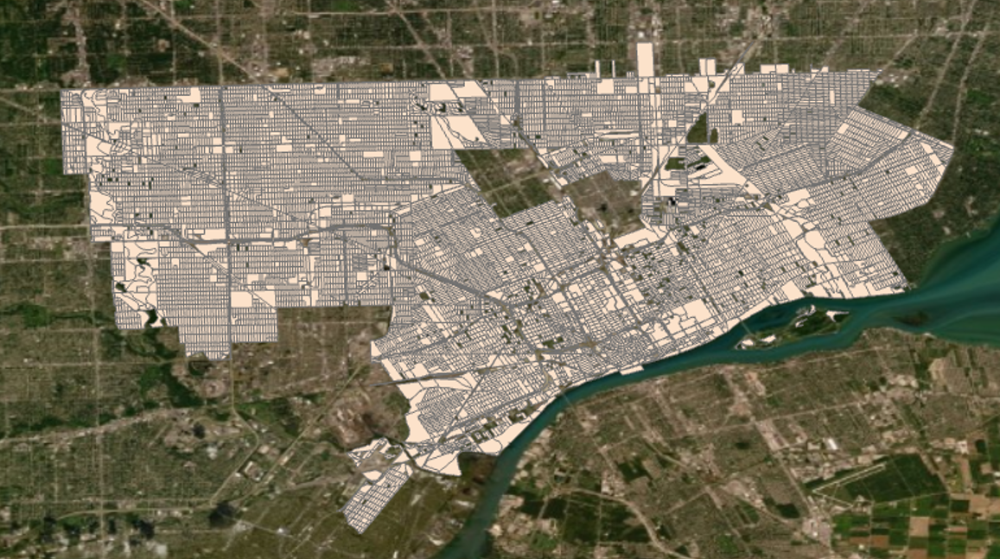
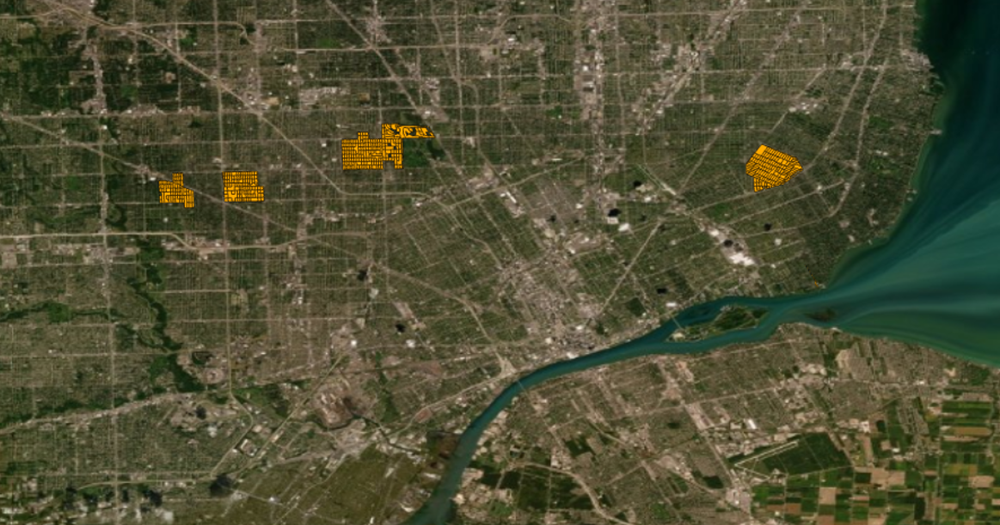

Lab 1 Visualizing Historical Redlining Legacies
Written by
Paul Pickell
Lab Overview
‘Redlining’ is the illegal and discriminatory practice of denying services to residents of specific neighbourhoods based on racial or ethnic status. In the United States, financial institutions would ‘redline’ neighbourhoods of predominately Black or mixed-race residents and refuse to provide loans, home insurance and mortages in these communities. The legacy of historic redlining can still be seen today in the allocation of greenspace, urban gentrification and socioeconomic differences between neighbourhoods.
In this lab you will practice using overlay analysis tools to explore the legacy of redlining in American cities. You will learn about the redlining concept, differentiate between land cover and land use, and practice using Structured Query Language (SQL). You will also practice data management and organization within a geodatabase. The lab will provide a naming system to organize the data. However, you can use a different file naming system if it makes more sense to you. At the end of the lab, you will demonstrate your understanding by conducting a small overlay analysis showing the spatial legacies of redlining in a city.
Learning Objectives
- Practice data management and organization in a geodatabase.
- Distinguish the different definitions between land cover/use.
- Use Structured Query Language (SQL) to select features based on their attributes.
- Understand the mechanisms behind different data analysis tools and practice using them.
- Understand and learn to visualize the historical legacies of redlining could on the present day and understand the Luxury Effect.
Deliverables
- Answers to 13 questions posed in the lab handout
- A PDF map complete with all necessary elements
- Discussion question
Task 1: Understand Redlining
Background
Redlining emerged as a discriminatory practice in the 1960s to refuse mortgages, insurance, loans and other financial services to specific communities based on race and socioeconomic class. (D’Rozario and Williams 2005). The term ‘redlining’ was coined by the sociologist John Mcknight and stems from the practice of governments and money lenders literallying draw red lines on maps of urban areas (see map below of Seattle, Washington). Districts were labelled from ‘A’ to ‘D’ based on the perceived ‘safety’ of investments in these regions. Black communities underwent the most severe discrimination. Studies have found that banks would preferentially give loans to lower-class white borrowers over middle or upper-class African Americans (The Federal Reserve). As a result of financial discrimination in primarily Black neighbourhoods, other public services related to health, environment, and utilities tended to worsen in these places over time. Redlining is an illegal practice nowadays. However, in communities that were historically redlined, homeownership, wealth and well-being are still much lower than nearby areas that did not face discriminatory lending practices (Hayes 2022).

For more information on redlining that can inform your discussion see the following resources:
https://dsl.richmond.edu/panorama/redlining/#loc=13/41.602/-93.668&city=des-moines-ia
During this lab, you will visualize some of the remaining impacts of redlining by conducting an overlay analysis using historic redlining districts and current socioecnomic and demographic data.
Task 2: Import Data & Understand Data
Step 1: Create a new Catalog document in ArcGIS Pro. Import the saved downloaded data from Github to your project folder (If all is the default, it should be: C:\Users\hyan08.stu\Documents\ArcGIS\Projects\MyProject). Set your project geodatabase the same as the default geodatabase.
Tips: While you add more files to your ArcGIS Pro Project folder, you may not be able to see your newly updated file immediately. You can press the refresh button on the right corner (red circle) of the ribbon to synchronize the information.

Step 2: Under the insert tab, click New Map to create a new map. Then drag all the data from the data folder into the map content panel. The data should contain a redlining stratification map for the United States (USA_Redlining_shpfile\shapefile\holc_ad_data.shp) and some basic information about Detroit. The holc_ad_data.shp contains all the stratified districts in various cities across the USA.
Step 3: Take some time to toggle on and off different layers .
In the Contents pane, you can organize layers into Groups by right-clicking the layer and choosing New Group Layer. For example, you can name one group “original” and another group “editing” to differentiate the source data and the processed layers.
Step 4: View the data coordinate system for each layer to make sure they are the same. (The Projected Coordinate System should be WGS 1984 Web Mercator (auxiliary sphere) and the Geographic coordinate System should be WGS 1984). If not, you can choose to use the “Project” tool or “Define Project” tool to alter them.
Step 5: Now that you are familiar with all the data layers, we can then import them into a geodatabase. Import the holc_ad_data to the project.gdb by using the Feature Class to Feature Class tool in the geoprocessing panel.
Concurrently, you can also find the tool under Contents > Data > Export Data. Be sure to rename the holc_ad_data layer to USA_Redlining in the gdb to make it easier to remember.
Step 6: Following what has been done to the layer holc_ad_data, import the prepared data: public library, police station, parks and landmarks, bike lanes, crime information (All data featuring Detroit), and area descriptions ( found in the HOLC_Cities.gdb) .
Step 7: Before moving on, you can take a look at your geodatabase to see if it aligns with the files listed below.

Task 3: Join Tables
Step 1: In the attribute table of the USA_Redlining shape file, each field column represents a different attribute of the polygons. Take a look at the attribute table of the files USA_Redlining and the area_descriptions table, you should be able to spot similar or different attributes in each file. Take a moment to find the connection between these two files.
Step 2: We will join the USA_Redlining features to the attributes in area_descriptions table. Right-click the USA_Redlining file under the content panel, and choose Join and Relates > Add Join. Think about what fields you will put under the Input Join Field and Join Table Field to complete the join of these two tables.
Step 3: When finishing the join, you can open the attribute table for file USA_Redlining to delete iterative columns (You can also do this step before joining the table).
Step 4: Once you have finished all the steps, you can see that the USA_Redlining layer attribute table will contain the area_description table.
Tip: Save the file to the default gdb to make it permanent.
Task 4: Select Features Using SQL statements
The SQL statement is widely used in ArcGIS to select your targeted features. There are four basic conditional operators (i.e., Boolean operators): AND, OR, XOR, and NOT. Similar to the Set concept in mathematics. Using the dataset shown in the table below, here are some examples of the four operators.

AND is an exclusive statement that needs the selected feature to meet both or multiple criteria to be passed. The tuple illustration for A AND B is listed below.

If we want to choose a tree species whose DBH is larger than 20 cm and whose height is higher than 20 metres, we need to use the AND Boolean conditional operator and we will write the statement as (DBH > 20) AND (Height > 20). This SQL statement will select tree ID #4.
Or is an inclusive statement that will select all the features that meet any one of the criteria. As outlined in the shaded blue tuple, all the features that fall within this area will be selected (A OR B).

If we want to choose a tree species whose DBH is larger than 20 cm or the tree species is a Douglas-Fir, we need to use the Or Boolean conditional operator and we will write the statement as (DBH > 20) Or (species = Douglas-Fir). This will select tree ID #2, #3, and #4.
NOT is an exclusive statement. It is used to diminish the range of one desired characteristic. The tuple illustration for A NOT B is shown below.

If we want to choose a tree species whose DBH is larger than 20 cm but the tree is not a Douglas-Fir, we need to use the NOT Boolean conditional operator and we will write the statement as (height > 20) NOT (species = Douglas-Fir). It will select tree ID #3.
Finally, XOR is used to describe a relationship to exclude the common area in two tuples, but the areas that are true individually for both or multiple statements will be kept. (i.e. everthing but the intersection of A and B).

If we want to choose a tree species whose height is lower than 20 metres or that is a Douglas-Fir, but we want to exclude species that has both characteristics, we need to use the XOR Boolean conditional operator and we will write the statement as (height < 20) XOR (species = Douglas-Fir). It will select tree ID #1, #2, and #4.
Now use what you learned from the class and the handout, use the select by attributes tool, and answer the following questions:
Q4: Select polygons whose neighbourhood attribute is between 2000 and 4000, and the redlining classification is B or V. How many objects do you select? Include your sql statement.
Q5: Select polygons that are from Baltimore or Portland, but the redlining classification is not A. How many objects do you select? Include your sql statement.
Step 1: Next, we will use Detroit as a case study in the legacies of redlining. Select Detroit from the USA_Redlining layer.
Step 2: Right-click the USA_Redlining layer in the Contents panel > Data, > Export Features. Or you can also find the Export Features button under the Data tab on the top ribbon.
Step 3: Write an SQL statement to select all the polygons from Detroit City. Name the Output file as Detroit and save to the geodatabse.
Tips: When you are mainly working on one layer in the Map Content Panel, you can turn off the other layers to make it clearer for visualization.
Task 5: Land cover and land use
Land cover and land use are two easily confused terms. Land cover refers to the physical surface cover of the area. For example, it could be bare soil, ocean, mixed forest, and grey infrastructures. Land use, is described as the facility services the land can provide. Conservation areas, recreational areas, Golf Courts, and Ski resorts are all examples of land use. The Land cover & use concepts are widely used in the GIS field.
In this lab, you will examine the connections between land cover, land use and redlining.
Step 1: Change the Basemap layer to Satellite image. You can find this under Map (top ribbon) > Basemap > Imagery or Imagery Hybrid
Step 2: Use the Select by Attributes tool to select the appropriate polygons to answer the questions below.
Tip: You can change the transparency levels in the appearance tab to compare the overlapping part more easily.
Task 6: Stratifying Districts
Now, we will classify the districts of Detroit according to their redlining categorization.
Step 1: Use the Export Feature tool, export the Detroit districts into separate features based on their holc_grade attribute value. Name the output files Detroit_A, Detroit_B, Detroit_C, and Detroit_D.
Tip: To show a clean and organized data folder, we can put the layers Detroit_A, Detroit_B, Detroit_C, and Detroit_D in a new layer group called Detroit Districts.
Step 2: Use the reclassify field tool to reclassify the holc_grade field for Detroit. This step is made to better stratify different zoning areas in the cities. After this step, you will add a new column to the Detroit attribute table, the default name should be holc_grade_UNIQUE_VALUES but you can change it into VALUES to make it concise.
Step 3: As you have the values to classify the holc_grade column, you can left-click the symbology square under Detroit in the map contents panel. Then, under the symbology panel, you can click the hamburger menu icon and choose the “Vary symbology by attribute” ribbon.
Q7: What is the purpose of Step 2?
Step 4: Now you can adjust the colour scheme to sort out the best spectrum to show the difference between the four stratified districts.
Q8: Export the map of the Detroit stratified districts and public services layers (police stations, libraries etc). The map should include a scalebar, compass and legend.
Additional Map Requirements: - Map should be 11”x17” either as a landscape or portrait layout - You should export the map as a PDF document - All features on the map should appear in the legend
Task 7: Data Analysis
Next, we will examine the association between the redlining classification system and district planning using library, crime rate, bike lanes, and parks and landmarks data.
- Toggle on and off the different layers.
- Observe the location of different public facilities
- Compare them with the stratified map you just created. Take some notes on your findings (Prepared for the Canvas Post) and then we will mainly work on the crime layer.
Note: The primary aim of this data analysis is to find out how many crime events are happening in each stratified district in the Detroit area. Thus, the final output will be polygons with the total violent/property crime cases in the attribute table.
Step 1: Toggle on the Crime layer, you will see many scattered polygons in the Detroit city region.

If you switch between the Detroit redlining layer and the crime layer you will find they are not 100% overlapping.
Q9: What analysis tool can you use to extract the overlapping area across the Detroit and redlining layers?
Hint: After using the correct tool, the new layer will look like the picture below.

Next, we will stratify the polygons in the crime layer by redlining district.
Q10: What analysis can will you use to extract the polygons in the crime layer by redlining district? Hint: think about how to use the four stratified layers we created (Detroit_A, B, B and D).
Name the output files: Crime_A, Crime_B, Crime_C, and Crime_D
Hint: After this step, the crime layer for District A should be similar to this one:

Step 3: Now that we have all the crime polygons from the A to D districts. We will merge the crime polygons in the redlining districts (A,B,C,D) to calculate the sum of the Violent Crime and Property Crime in each district.
Q11: What tool will you use to merge the crime polygons in each redlining district?
The result for district A should look like the following:

Q12: What is the total violent crime for the redlining districts classified A and B in Detroit? What about the total property crime for B and D districts?
Next, to account for differences in district size, divide the total crimes by the district area (shape_area) using the Calculate Field tool in the attribute table.